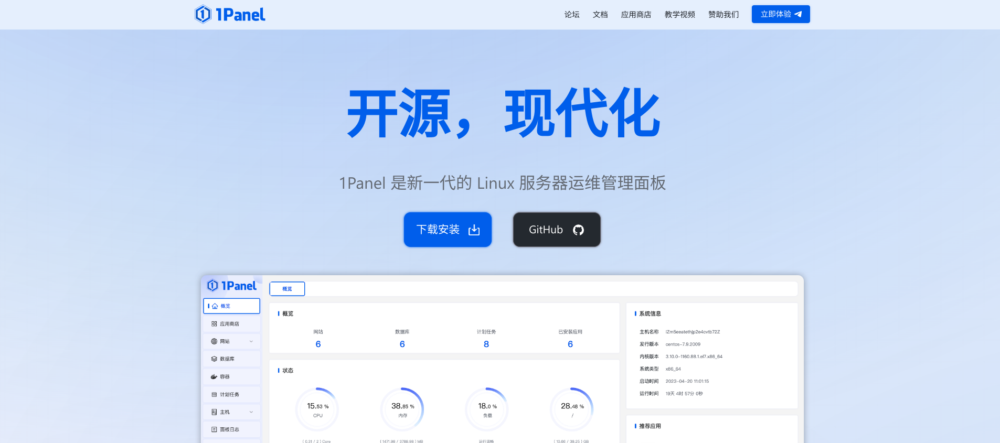
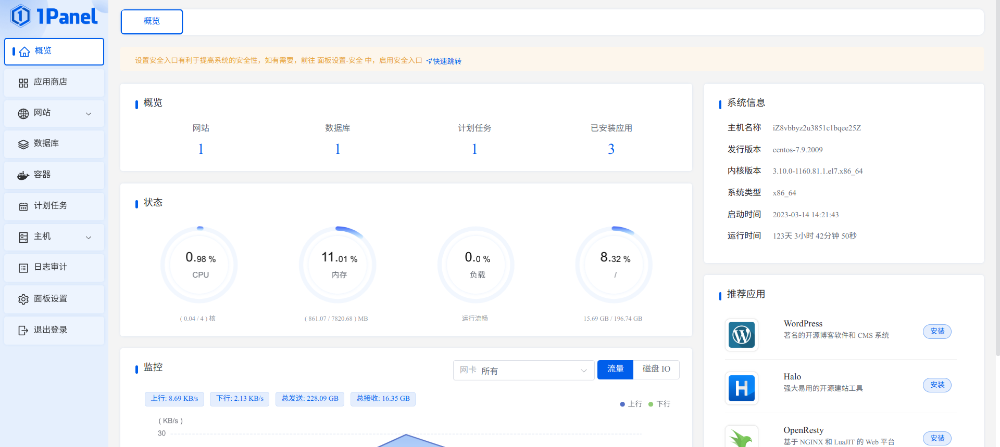
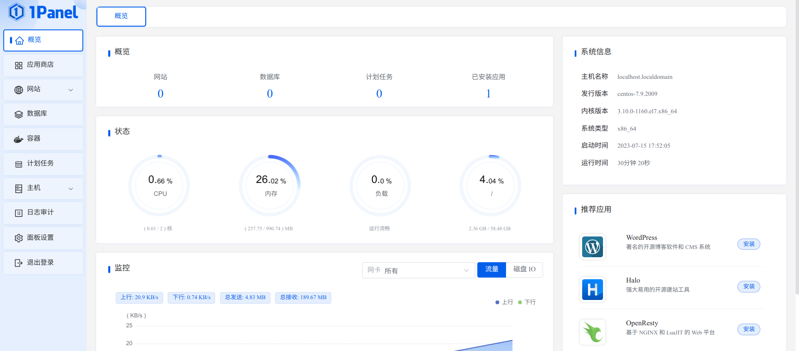
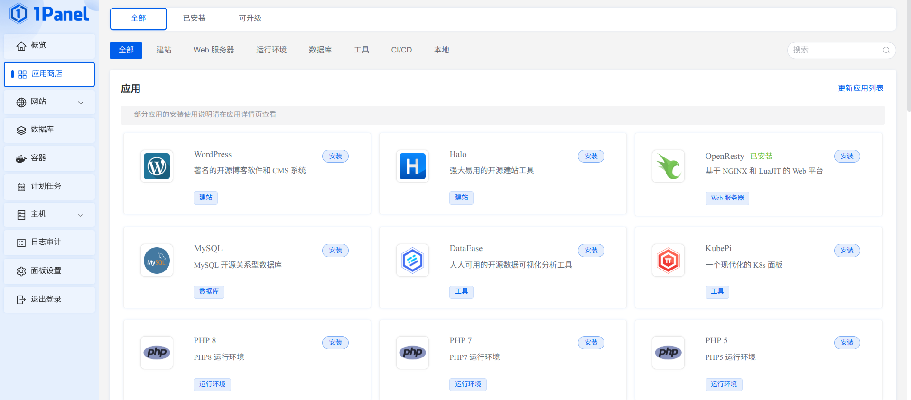
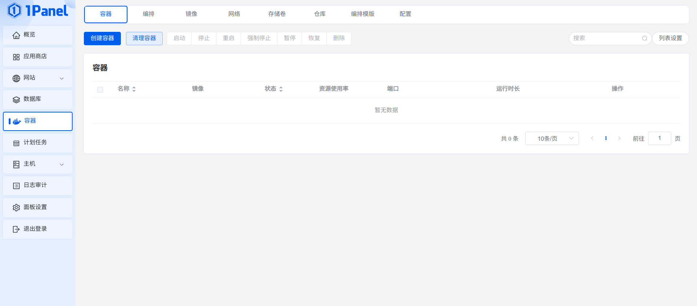
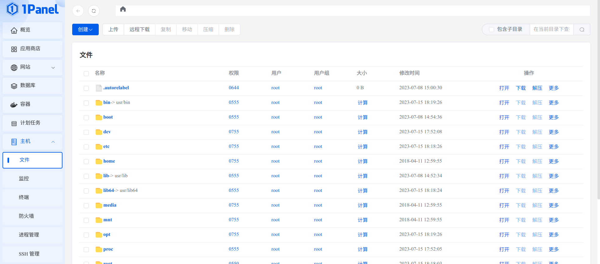
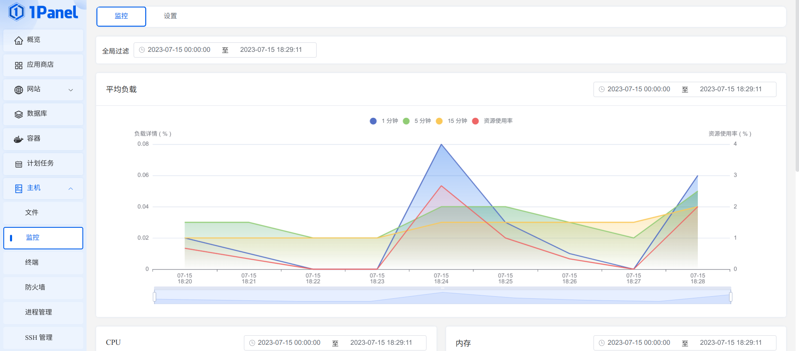
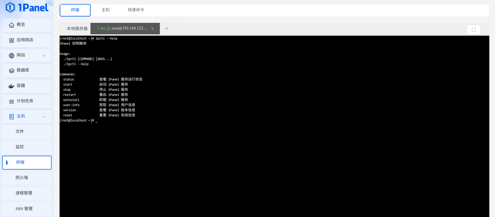
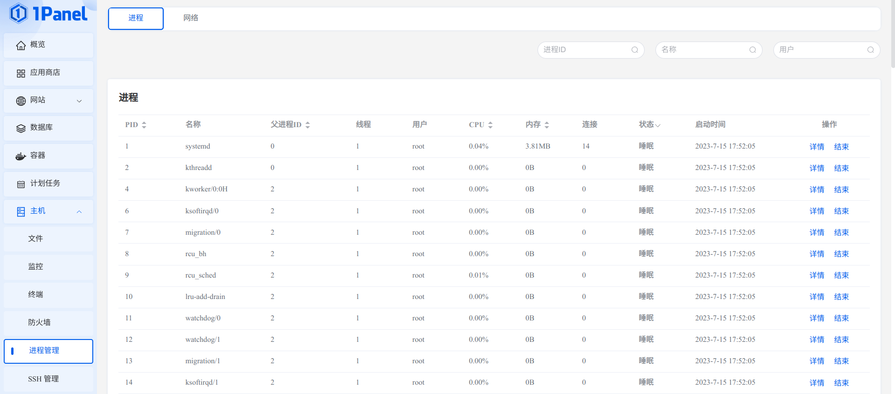
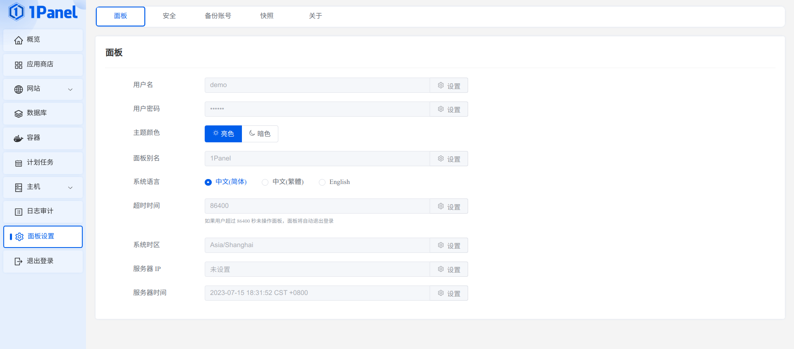

1Panel开源web面板
介绍
1Panel 是一个现代化、开源的 Linux 服务器运维管理面板。
众所周知，开源即最就最大优势。1Panel就是如此
1Panel面板是基于容器来管理和部署应用，最小漏洞暴露面，提供防火墙和日志审计等功能支持一键备份和恢复，数据备份到各类云端存储，永不丢失。
1Panel其背后的公司是：杭州飞致云信息科技有限公司，这个公司也有大量的大型开源项目，1Panel在Github上全开源发布。
GitHub 链接: https://github.com/1Panel-dev/1Panel
产品优势
- 快速建站：深度集成 Wordpress 和 Halo，域名绑定、SSL 证书配置等一键搞定；
- 高效管理：通过 Web 端轻松管理 Linux 服务器，包括应用管理、主机监控、文件管理、数据库管理、容器管理等；
- 安全可靠：最小漏洞暴露面，提供防火墙和安全审计等功能；
- 一键备份：支持一键备份和恢复，备份数据云端存储，永不丢失。
社区论坛
飞致云开源社区论坛板块：https://bbs.fit2cloud.com/c/1p/7
页面展示
安装
在线体验
- 环境地址：https://demo.1panel.cn/
- 用户名：demo
- 密码：1panel
1 环境要求
安装前请确保您的系统符合安装条件：
- 操作系统：支持主流 Linux 发行版本（基于 Debian / RedHat，包括国产操作系统）；
- 服务器架构：x86_64、aarch64、armv7l、ppc64le、s390x；
- 内存要求：建议可用内存在 1GB 以上；
- 浏览器要求：请使用 Chrome、FireFox、IE10+、Edge等现代浏览器；
- 可访问互联网。
2 安装部署
1Panel和其它web面板如宝塔和appnode一样提供有一键安装命令：

我这里的环境是centos7.9直接使用
1 | curl -sSL https://resource.fit2cloud.com/1panel/package/quick_start.sh -o quick_start.sh && sh quick_start.sh |
3 演示图
       个人看法
如今，信息科技发达，建设网站的门槛已经变的极低，还记得我第一次搭建网站，使用的程序是WordPress，使用AppNode面板，上传个源码访问域名直接绑定就行了。曾经也使用过宝塔、EasyPanel、phpstudy（小皮面板）、cPanel、AMH等，最终还是选择了AppNode和宝塔，appnode因为未知原因暂停更新了，也只支持centos系统，在今天来说这已经落后于时代发展了，但是优点也有很多，这里就不做介绍了。宝塔作为目前老牌web面板，一直在保持更新，支持ARM环境。缺点也很明显，一家独大了基本上，在主要功能页面携带广告，页面臃肿环境乱，和时常更新一些无用功能，这些对于小配置机器来说无异于占用浪费资源。
回归正题：在开源成为大趋势的今天，1Panel是本人作为日后如果有业务首选对象，页面简洁，面板UI符合我的审美，更新频次也非常快，内部功能基本上已满足我目前需求，在加上开源，个人感觉已经比宝塔强上太多。